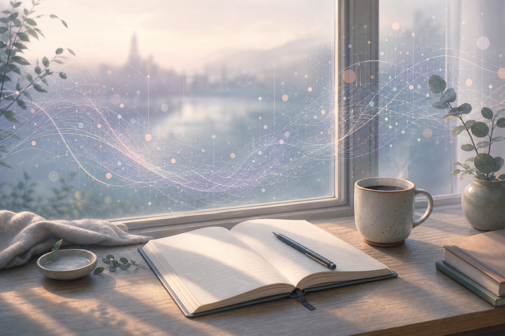
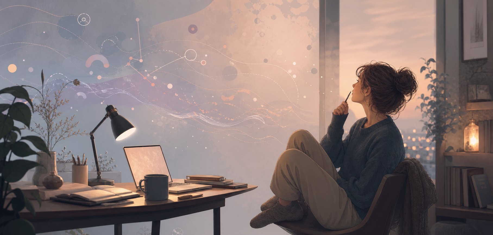

生活随笔

个人博客 / 生活随笔 / 温柔科技感
这里是你的昵称的个人博客。记录生活里的细小线索、偶尔闪现的念头， 也记录我如何在屏幕、城市和纸页之间，重新理解自己正在经历的事。

写下那些不够宏大、但确实改变心情的小事。
从路灯、屏幕、一次对话里，捕捉世界的纹理。
记录想法从混沌到成形，也允许它们暂时停在半路。
Featured Essays
先放三篇样例文章，之后可以替换成真实标题和链接。
About
我把这里当成一张慢慢长出来的桌面：有随手放下的句子，有还没完全想清楚的问题， 也有某天忽然想认真保存的画面。
我喜欢柔和一点的科技感，因为它像现实生活本身：屏幕会发光，数据会流动， 但真正让人留下来的，仍然是某个具体的人、某段沉默、某次重新开始。
Recent Notes
把冷硬的科技感收起来一点，留下屏幕微光、纸页和生活的温度。
生活随笔、观察记录、创作笔记，分别安放不同密度的想法。
先不急着完整，先让它们有一个能被再次遇见的位置。
Contact
可以从一封邮件开始。这里的链接都是占位，替换成你的真实邮箱和社交主页即可。